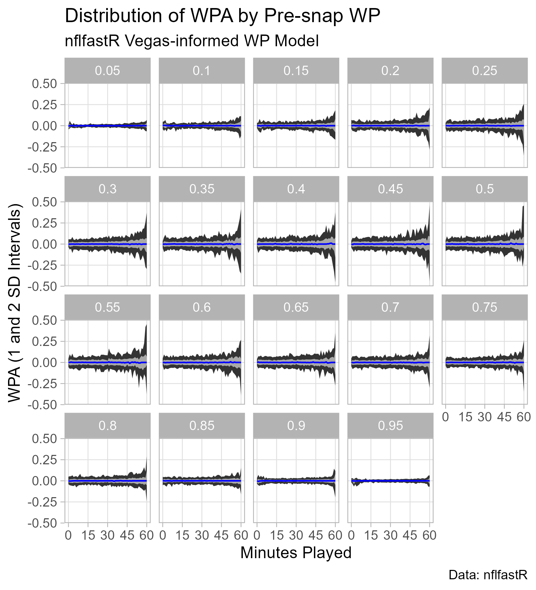
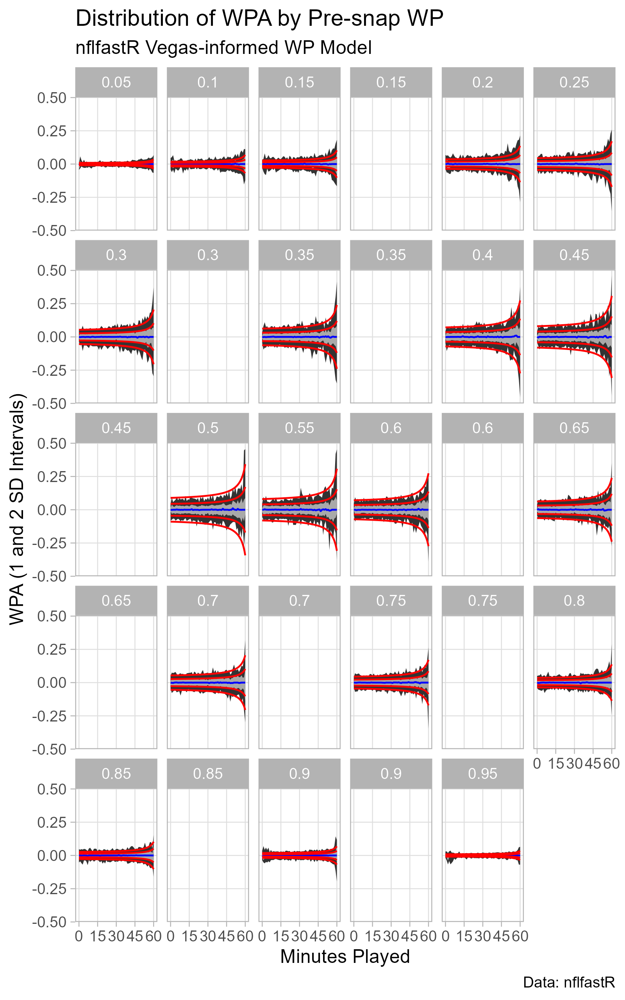

Toward a Dynamic: Some statistical properties of Win Probability Added.
In Part I of this series, I provided the most basic of introductions to options pricing, describing a simplified Bachelier model for a binary call option. The real point was to introduce the quantitative finance idea of valuing something on the basis of a stochastic process: simulate many possible paths for an assumed dynamic, and determine the value of an instrument based on the distribution of the simulated outcomes.
Here, I examine the dynamics of NFL win probability forecasts: specifically, I look at the nflfastR win probability model that incorporates the pre-game Vegas line (i.e., vegas_wpa, vegas_home_wpa, vegas_wp, vegas_home_wp). For a technical description of the model (or something close to it), see it’s creator’s (Ben Baldwin) article here.
My interest in the topic was sparked by a Nassim Taleb video on YouTube, summarized by the opening quote in the introduction to a Taleb paper on election forecasting dynamics.
“A standard result in quantitative finance is that when the volatility of the underlying security increases, arbitrage pressures push the corresponding binary option to trade closer to 50%, and become less variable over the remaining time to expiration. Counterintuitively, the higher the uncertainty of the underlying security, the lower the volatility of the binary option.”
Nassim Taleb
Previously, I explored some tests for excess movement in win probability streams for NFL (nflfastR model) and MLB (MLB.com data) games based on a paper by Ned Augenblick and Matthew Rabin.
“Volatility involves uncertain changes of state… Time and chance happen to us all. A stock price that moves unpredictably up and down is volatile. Its volatility reflects the unstable equilibrium between two simultaneous but conflicting occurrences: good news and bad news, the desire to buy and the desire to sell, in permanent conflict. As in politics, there is no volatility without conflict.”
Consider each in-game win probability (WP) estimate as a price. The threat of arbitrage forces the WP stream to be a martingale: “knowledge of the past will be of no use in predicting the future” and “the direction of anticipated future swings… should be already baked into the current prediction” (from Andrew Gelman et al, 2020). Therefore, Win Probability Added (WPA) should be 0 in expectation.
The Taleb quote describes some effects of uncertainty.
What are the systematic sources of uncertainty in an NFL WP stream?
I’ll acquire the data from nflfastR and then prepare it for plotting.
For convenience, I’ll look at win probabilities for home teams only, from 2017 until the time time of publishing.
As described above, I want to be able to look across time for a given WP. Therefore, I do some grouping by time remaining and pre-snap WP to get a more reasonable number of points in each “bucket.”
Then, I find some empirical WPA quantiles in each pre-snap WP/Time-in-Game bucket.
pbp_df <- load_pbp(2017:2023)
df <- pbp_df %>%
filter(is.na(vegas_home_wpa) == F) %>%
mutate(vegas_home_wp = cut_width(vegas_wp, width = 0.05, center = 0.5),
game_seconds_played = 3600 - game_seconds_remaining,
game_seconds_played = cut_width(game_seconds_played,
center = 1800,
width = 60)) %>%
filter(game_half != "Overtime") %>%
filter(game_seconds_played != 0)
# Via https://stackoverflow.com/questions/22312207/how-to-assign-cut-range-midpoints-in-r
# The cut_width function provides intervals
# To plot, I want the midpoint. This function
# does so by removing the interval notation
# (e.g., open/close brackets or parentheses,
# comma between values) and taking the mean
# of the interval boundaries.
get_midpoint <- function(cut_label) {
mean(as.numeric(unlist(strsplit(gsub("\\(|\\)|\\[|\\]", "",
as.character(cut_label)), ","))))
}
df$vegas_home_wp <-
sapply(df$vegas_home_wp, get_midpoint)
df$game_seconds_played <-
sapply(df$game_seconds_played, get_midpoint)
empirical_df <-
df %>%
group_by(game_seconds_played, vegas_home_wp) %>%
summarize(lower_bound_1 = quantile(vegas_home_wpa, pnorm(-1)),
lower_bound_2 = quantile(vegas_home_wpa, pnorm(-2)),
median = quantile(vegas_home_wpa, 0.5),
upper_bound_1 = quantile(vegas_home_wpa, pnorm(1)),
upper_bound_2 = quantile(vegas_home_wpa, pnorm(2)),
n = n())p_wpa <-
empirical_df %>%
filter(vegas_home_wp %in% c(0, 1, 0.9975) == F) %>%
ggplot(aes(x = game_seconds_played/60,
y = vegas_home_wp,
group = vegas_home_wp)) +
geom_ribbon(aes(ymin = lower_bound_2,
ymax = upper_bound_2)) +
geom_ribbon(aes(ymin = lower_bound_1,
ymax = upper_bound_1),
fill = "dark gray") +
geom_path(aes(y = median),
color = "blue") +
theme_light() +
scale_x_continuous(breaks = c(0, 15, 30, 45, 60),
minor_breaks = NULL) +
scale_y_continuous(breaks = seq(-0.5, 0.5, 0.25),
minor_breaks = NULL) +
facet_wrap(~ vegas_home_wp) +
labs(x = "Minutes Played",
y = "WPA (1 and 2 SD Intervals)",
title = "Distribution of WPA by Pre-snap WP",
subtitle = "nflfastR Vegas-informed WP Model",
caption = "Data: nflfastR")
ggsave(
filename = "wpa_by_pre-snap_wp_and_time.png",
plot = p_wpa,
height = 5.5,
width = 5,
units = "in",
dpi = "retina"
)
The data matches the expected patterns pretty well.
Here, I introduce a toy dynamic for WP based on the preceding observations. The point is to develop a simple model that matches the nflfastR WP model well enough to develop some novel conclusions via a stochastic process approach.
For simplicity, I’ll assume WPA follows a Normal distribution.
\(WPA \sim N(\mu = 0, SD = \sigma_{WP, t})\)
\(\sigma_{WP, t} = 0.07 (0.5 - \lvert{WP - 0.5}\rvert) + \frac{75 ((0.5 - \lvert{WP - 0.5}\rvert))}{3875 - t}\)
Here, t is game seconds played.
The “0.5 - |WP - 0.5|” term is just the distance from certainty (i.e, WP = 0 or WP = 1).
wp_vector = seq(0.0, 1.0, by = 0.05)
dist_from_certain = 0.5 - abs(wp_vector - 0.5)
plot_df <-
data.frame(wp_vector, dist_from_certain)
plot_df %>%
ggplot(aes(
x = wp_vector,
y = dist_from_certain
)) +
geom_hline(yintercept = 0) +
geom_vline(xintercept = 0) +
geom_path(color = "dark gray") +
geom_point() +
theme_light()rm(wp_vector, dist_from_certain, plot_df)The fractional term captures the growth in Var[WPA] as the game progresses. I picked a hyperbolic form to capture the rapid increase in Var[WPA] as games reach their conclusion and the digital resolution of (non-overtime) WP streams.
The three constants were picked by trial-and-error, eyeballing the fit with the plot of the nflfastR model data above.
stochastic_model <-
expand_grid(game_seconds_played = seq(0, 3600, by = 30),
wp = seq(0.05, 0.95, by = 0.05)) %>%
mutate(dist_from_certainty = 0.5 - abs(wp - 0.5)) %>%
mutate(wpa_sd_model = (0.07*dist_from_certainty) + ((75*dist_from_certainty)/(3875 - game_seconds_played))) %>%
mutate(vegas_home_wp = wp) %>%
mutate(lower_bound_1 = -1 * wpa_sd_model,
lower_bound_2 = -2 * wpa_sd_model,
upper_bound_1 = 1 * wpa_sd_model,
upper_bound_2 = 2 * wpa_sd_model)
p_stochastic_fit <-
p_wpa +
geom_path(
aes(
x = game_seconds_played/60,
y = lower_bound_1
),
data = stochastic_model,
color = "red"
) +
geom_path(
aes(
x = game_seconds_played/60,
y = lower_bound_2
),
data = stochastic_model,
color = "red"
) +
geom_path(
aes(
x = game_seconds_played/60,
y = upper_bound_1
),
data = stochastic_model,
color = "red"
) +
geom_path(
aes(
x = game_seconds_played/60,
y = upper_bound_2
),
data = stochastic_model,
color = "red"
)
ggsave(
filename = "stochastic_fit.png",
plot = p_stochastic_fit,
height = 8,
width = 5,
units = "in",
dpi = "retina"
)
That’s clunky code, and I’m not really sure what is going on with the blank panels.
Overall, the quantiles fit reasonably well. Again, the goal is to develop a simple model that matches the nflfastR WP model well enough to develop some novel conclusions via a stochastic process approach.